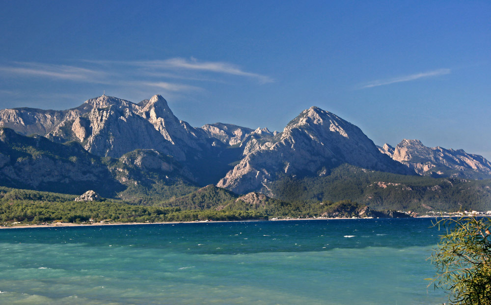

<!DOCTYPE html>
<html ng-app="ionicApp">

<head>
  <meta charset="utf-8">
  <meta http-equiv="Content-Security-Policy" content="default-src * 'unsafe-eval' 'unsafe-inline'">
  <meta name="format-detection" content="telephone=no">
  <meta name="msapplication-tap-highlight" content="no">
  <meta name="viewport" content="user-scalable=no, initial-scale=1, maximum-scale=1, minimum-scale=1, width=device-width">
  <link rel="stylesheet" type="text/css" href="css/index.css">
  <title>Hello World</title>
  <link href="lib/ionic/release/css/ionic.css" rel="stylesheet">
</head>

<body>
  <ion-nav-bar class="bar-positive">
    <ion-nav-back-button>
    </ion-nav-back-button>
  </ion-nav-bar>

  <ion-nav-view></ion-nav-view>


  <script id="templates/tabs.html" type="text/ng-template">
    <ion-tabs class="tabs-icon-top tabs-positive">

      <ion-tab title="dsldjHome" icon="ion-home" href="#/tab/home">
        <ion-nav-view name="home-tab"></ion-nav-view>
      </ion-tab>

      <ion-tab title="About" icon="ion-ios-information" href="#/tab/about">
        <ion-nav-view name="about-tab"></ion-nav-view>
      </ion-tab>

      <ion-tab title="Contact" icon="ion-ios-world" ui-sref="tabs.contact">
        <ion-nav-view name="contact-tab"></ion-nav-view>
      </ion-tab>

    </ion-tabs>
  </script>

  <script id="templates/home.html" type="text/ng-template">
    <ion-view view-title="Home">
      <ion-content class="padding">
        <p ng-controller="CameraController" style="text-align: center;">
          <!-- <a class="button icon icon-right ion-chevron-right" href="#/tab/facts">Scientific Facts</a> -->
          <!--  -->
          <canvas id="editCanvas" width="300" height="300"></canvas>
        </p>


        <style>
          .wide-as-needed {
            overflow: scroll;
            white-space: nowrap;
          }

          .test {
            float: left;
            width: 80px;
            height: 80px;
            border: 1px solid red;
          }
        </style>


      <filters-slider></filters-slider>

        <ion-scroll direction="x" class="wide-as-needed">
          <span ng-repeat="filter in filters" ng-click="applyFilter(filter)" style="display: inline-block; width: 80px; padding: 10px; border: 1px solid red; text-align: center;">
            
            <br />
            <span style="font-size: 8px;">{{filter.name}}</span>
          </span>
        </ion-scroll>


      </ion-content>
    </ion-view>
  </script>

  <script id="templates/facts.html" type="text/ng-template">
    <ion-view view-title="Facts">
      <ion-content class="padding">
        <p>Banging your head against a wall uses 150 calories an hour.</p>
        <p>Dogs have four toes on their hind feet, and five on their front feet.</p>
        <p>The ant can lift 50 times its own weight, can pull 30 times its own weight and always falls over on its right side when intoxicated.</p>
        <p>A cockroach will live nine days without it's head, before it starves to death.</p>
        <p>Polar bears are left handed.</p>
        <p>
          <a class="button icon ion-home" href="#/tab/home"> Home</a>
          <a class="button icon icon-right ion-chevron-right" href="#/tab/facts2">More Facts</a>
        </p>
      </ion-content>
    </ion-view>
  </script>

  <script id="templates/facts2.html" type="text/ng-template">
    <ion-view view-title="Also Factual">
      <ion-content class="padding">
        <p>111,111,111 x 111,111,111 = 12,345,678,987,654,321</p>
        <p>1 in every 4 Americans has appeared on T.V.</p>
        <p>11% of the world is left-handed.</p>
        <p>1 in 8 Americans has worked at a McDonalds restaurant.</p>
        <p>$283,200 is the absolute highest amount of money you can win on Jeopardy.</p>
        <p>101 Dalmatians, Peter Pan, Lady and the Tramp, and Mulan are the only Disney cartoons where both parents are present and don't die throughout the movie.</p>
        <p>
          <a class="button icon ion-home" href="#/tab/home"> Home</a>
          <a class="button icon ion-chevron-left" href="#/tab/facts"> Scientific Facts</a>
        </p>
      </ion-content>
    </ion-view>
  </script>

  <script id="templates/about.html" type="text/ng-template">
    <ion-view view-title="About">
      <ion-content class="padding">
        <h3>Create hybrid mobile apps with the web technologies you love.</h3>
        <p>Free and open source, Ionic offers a library of mobile-optimized HTML, CSS and JS components for building highly interactive apps.</p>
        <p>Built with Sass and optimized for AngularJS.</p>
        <p>
          <a class="button icon icon-right ion-chevron-right" href="#/tab/navstack">Tabs Nav Stack</a>
        </p>
      </ion-content>
    </ion-view>
  </script>

  <script id="templates/nav-stack.html" type="text/ng-template">
    <ion-view view-title="Tab Nav Stack">
      <ion-content class="padding">
        <p>
          
        </p>
      </ion-content>
    </ion-view>
  </script>

  <script id="templates/contact.html" type="text/ng-template">
    <ion-view title="Contact">
      <ion-content>
        <div class="list">
          <div class="item">
            @IonicFramework
          </div>
          <div class="item">
            @DriftyTeam
          </div>
        </div>
      </ion-content>
    </ion-view>
  </script>

  <script type="text/javascript" src="lib/caman/dist/caman.full.js"></script>
  <script type="text/javascript" src="lib/ionic/release/js/ionic.bundle.js"></script>
  <script type="text/javascript" src="lib/ngCordova/dist/ng-cordova.js"></script>
  <script type="text/javascript" src="cordova.js"></script>
  <script type="text/javascript" src="js/index.js"></script>
  <script src="js/horizontal-slider.js"></script>

  <script>
    angular.module('ionicApp', ['ionic', 'ngCordova', 'ui.filtersSlider'])

    .config(function($stateProvider, $urlRouterProvider) {

      $stateProvider
        .state('tabs', {
          url: "/tab",
          abstract: true,
          templateUrl: "templates/tabs.html"
        })
        .state('tabs.home', {
          url: "/home",
          views: {
            'home-tab': {
              templateUrl: "templates/home.html",
              controller: 'HomeTabCtrl'
            }
          }
        })
        .state('tabs.facts', {
          url: "/facts",
          views: {
            'home-tab': {
              templateUrl: "templates/facts.html"
            }
          }
        })
        .state('tabs.facts2', {
          url: "/facts2",
          views: {
            'home-tab': {
              templateUrl: "templates/facts2.html"
            }
          }
        })
        .state('tabs.about', {
          url: "/about",
          views: {
            'about-tab': {
              templateUrl: "templates/about.html"
            }
          }
        })
        .state('tabs.navstack', {
          url: "/navstack",
          views: {
            'about-tab': {
              templateUrl: "templates/nav-stack.html"
            }
          }
        })
        .state('tabs.contact', {
          url: "/contact",
          views: {
            'contact-tab': {
              templateUrl: "templates/contact.html"
            }
          }
        });

      $urlRouterProvider.otherwise("/tab/home");
    })

    .controller('HomeTabCtrl', function($scope) {

      var caman;
      var canvas = document.getElementById('editCanvas');
      Caman(canvas, 'img/mountain.jpg', function() {
        caman = this;

        this.resize({
          width: 300,
          height: 300
        });
        this.render();
      });

      $scope.applyFilter = function(filter) {
        caman.revert();
        if(filter.name == 'sunrise')
          caman.sunrise();
        else if(filter.name == 'nostalgia')
          caman.nostalgia();
        else if(filter.name == 'glowingSun')
          caman.glowingSun();
        else if(filter.name == 'hemingway')
          caman.hemingway();
        else if(filter.name == 'love')
          caman.love();
        else if(filter.name == 'grungy')
          caman.grungy();
        else if(filter.name == 'lomo')
          caman.lomo();
        else if(filter.name == 'oldBoot')
          caman.oldBoot();
        caman.render();
      };

      $scope.filters = [{
        name: "sunrise"
      }, {
        name: "nostalgia"
      }, {
        name: "glowingSun"
      }, {
        name: "hemingway"
      }, {
        name: "love"
      }, {
        name: "grungy"
      }, {
        name: "lomo"
      }, {
        name: "oldBoot"
      }, ];
    })

    .controller("CameraController", function($cordovaFileTransfer) {
      // setTimeout(function() {
      //   navigator.camera.getPicture(onSuccess, onFail, { quality: 50, destinationType: Camera.DestinationType.FILE_URI });
      // }, 2000);
      //
      // function onSuccess(imageUrl) {
      //   document.querySelector("img").src = imageUrl;
      //
      //   console.log("HERE");
      //
      //   $cordovaFileTransfer.upload("http://10.0.3.2:3000/api/Photos/upload", imageUrl)
      //   .then(function(result) {
      //     console.log("fileupload", "success", arguments);
      //   }, function(err) {
      //     console.log("fileupload", "error", arguments);
      //   }, function (progress) {
      //     console.log("fileupload", arguments);
      //   });
      // }
      //
      // function onFail(event) {
      //   console.log(event);
      // }
    });
  </script>
</body>

</html>
